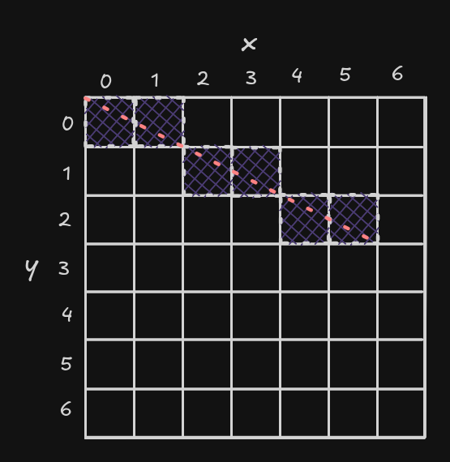
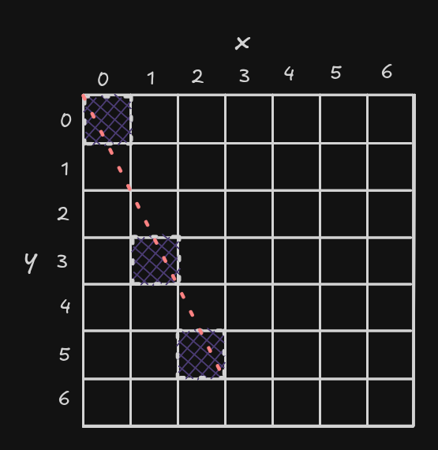
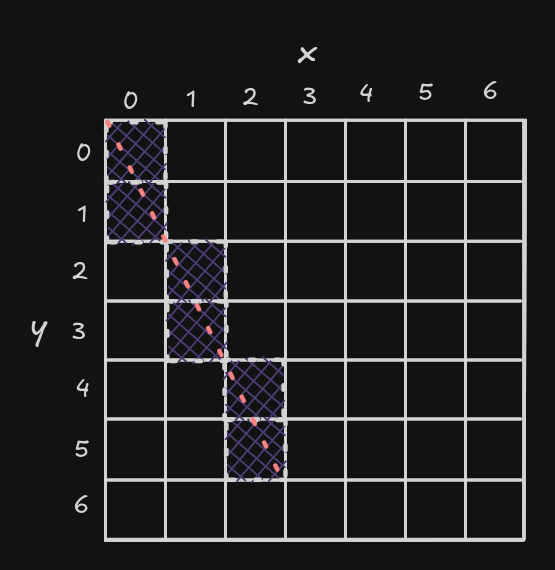

Hey there! Since my last blog post on lambda calculus, I've been tinkering with OCaml, and I recently started working on a PICO-8-like fantasy console Besides adding support for Lua as a scripting language, I'm thinking of adding support for Common Lisp as well, because why not? . While working on it, I came across some interesting algorithms, mainly related to computer graphics, and one of them is Bresenham's line algorithm.
Bresenham's line algorithm is a computer graphics algorithm that determines the set of pixels that should be selected to form the closest approximation of a straight line passing through two points, using only integer arithmetic. The core idea of this algorithm is later applied to other shapes, like circles, in Midpoint circle algorithm, and Bézier curves as well.
In this blog post, we'll take a look at how Bresenham's algorithm works under the hood and also a short implementation of it in OCaml and Raylib.
Given two points, \((x_0, y_0)\) and \((x_1, y_1)\), the slope of the line through them is:
\[m = \frac{y_1 - y_0}{x_1 - x_0}\]Using the point-slope form, the equation of the line is:
\[y = y_0 + m(x - x_0)\]To draw the line on a screen, which is basically a grid of pixels, we can step through each integer \(x\)-coordinate from \(x_0\) to \(x_1\), calculate the corresponding \(y\)-coordinate using the equation above, and round it to the nearest pixel.
Let's understand what that process looks like using an example. Consider a line passing through \((0, 0)\) and \((5, 2)\). In the context of computer graphics, the \(y\)-axis is generally inverted.
| \(x\) | \(y = 0.4 \cdot x\) | \(\text{round}(y)\) |
|---|---|---|
| 0 | 0.0 | 0 |
| 1 | 0.4 | 0 |
| 2 | 0.8 | 1 |
| 3 | 1.2 | 1 |
| 4 | 1.6 | 2 |
| 5 | 2.0 | 2 |

Simple enough, right? There is a slight issue with our current approach. We can't always iterate over the \(x\)-axis. This works for the example above because \(|dx| \geq |dy|\). For each every one pixel step along the \(x\)-axis, the corresponding change in \(y\) is at most one pixel, so rounding \(y\) doesn't end up skipping any row while rasterizing the line.
Now consider a line passing through \((0, 0)\) and \((2, 5)\).
| \(x\) | \(y = 2.5 \cdot x\) | \(\text{round}(y)\) |
|---|---|---|
| 0 | 0 | 0 |
| 1 | 2.5 | 3 |
| 2 | 5 | 5 |

As you can see above, some of the rows have been skipped, due to which there are gaps in the rasterized line. To fix this, instead of always iterating over \(x\)-axis, we can iterate over \(y\)-axis when \(|dy| \gt |dx|\).
| \(y\) | \(x = 0.4 \cdot y\) | \(\text{round}(x)\) |
|---|---|---|
| 0 | 0 | 0 |
| 1 | 0.4 | 0 |
| 2 | 0.8 | 1 |
| 3 | 1.2 | 1 |
| 4 | 1.6 | 2 |
| 5 | 2.0 | 2 |

Now that we've got a rough idea of how the algorithm works, we can
take a look at the OCaml implementation. Over here,
set function writes to a framebuffer, which is then
used by the graphics library, which is Raylib in this case, to
render the scene.
let round f = int_of_float (Float.round f)
let naive_line_drawing x0 y0 x1 y1 c =
let dx = (x1 - x0) in
let dy = (y1 - y0) in
if abs dx >= abs dy then begin
let m = if dx = 0 then 0.0 else float dy /. float dx in
for x = min x0 x1 to max x0 x1 do
let y = float y0 +. m *. float (x - x0) |> round in
set x y c
done
end else begin
let m = float dx /. float dy in
for y = min y0 y1 to max y0 y1 do
let x = float x0 +. m *. float (y - y0) |> round in
set x y c
done
endopen Raylib
let width = 600
let height = 600
let pixels = CArray.make Color.t (width * height)
let set x y c =
if x >= 0 && x < width && y >= 0 && y < height
then CArray.set pixels (y * width + x) c
let round f = int_of_float (Float.round f)
let naive_line_drawing x0 y0 x1 y1 c =
let dx = (x1 - x0) in
let dy = (y1 - y0) in
if abs dx >= abs dy then begin
let m = if dx = 0 then 0.0 else float dy /. float dx in
for x = min x0 x1 to max x0 x1 do
let y = float y0 +. m *. float (x - x0) |> round in
set x y c
done
end else begin
let m = float dx /. float dy in
for y = min y0 y1 to max y0 y1 do
let x = float x0 +. m *. float (y - y0) |> round in
set x y c
done
end
let () =
init_window width height "bresenham";
set_target_fps 60;
let image = gen_image_color width height Color.black in
let texture = load_texture_from_image image in
unload_image image;
set_texture_filter texture TextureFilter.Point;
naive_line_drawing 20 20 100 150 Color.blue;
update_texture texture (Ctypes.to_voidp (CArray.start pixels));
while not (window_should_close ()) do
begin_drawing ();
clear_background Color.black;
draw_texture_ex texture (Vector2.create 0. 0.) 0. 1.0 Color.white;
end_drawing ();
done;
unload_texture texture;
;;